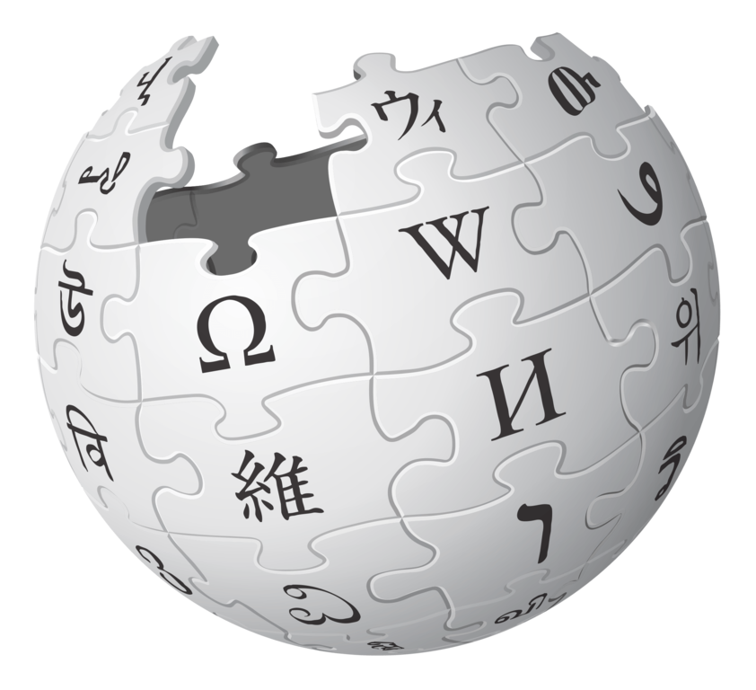

Wikipedia Edits

My Experience with Wikipedia
User: Pommer4
I am personally just not a fan of Wikipedia. I found it to be very confusing. I followed the instructions on the timeline step by step and completed them but I honestly don’t think I retained much of it at all. If I were to try and edit something on Wikipedia in the future, I would definitely need to look up a tutorial again. I think I’m also afraid of Pro-Wikipedia users coming for my throat because I did something slightly not to their liking and/or Wikipedia guidelines. Wikipedia doesn’t seem like a very inclusive space when it comes to students who are just passing by to do an assignment and then screwing up all of their hard work. I feel like it’s a very niche group of people that like to edit Wikipedia and I’m just not part of it. In order to get more editors to join Wikipedia, I think that current editors should recruit other people they know who also enjoy code and facts. To be a Wikipedia editor, you need to have the right amount of passion to turn it into a hobby because people who devote a lot of time and energy into Wikipedia are the reason it’s so great. The only reason I don’t like Wikipedia is because I’m scared to accidentally mess with their work and devotion. I guess another reason is the coding. I really struggle to wrap my brain around reading code - so far it has not gotten much easier. Something about the way in which Wikipedia is formatted just irks me. It’s like I can’t process a word I’m reading when I look at a Wikipedia article. I do believe that there are people in the class that really enjoyed this assignment, but it just kind of stressed me out.